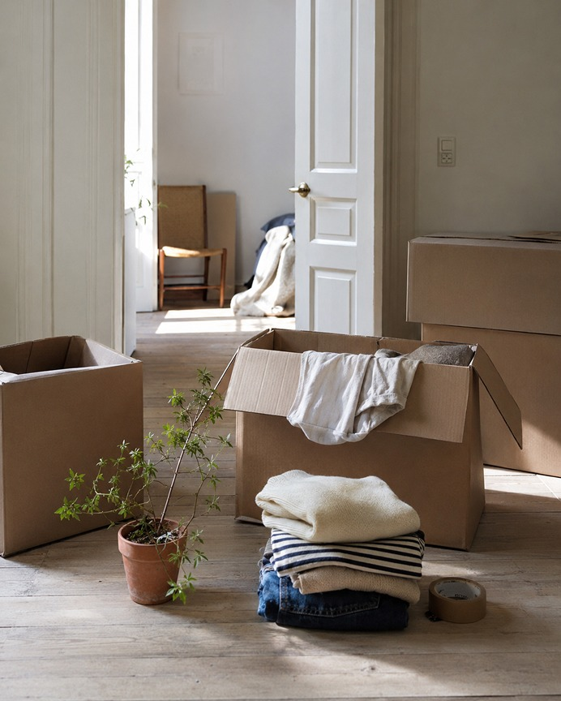
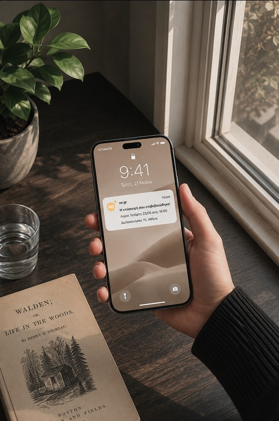
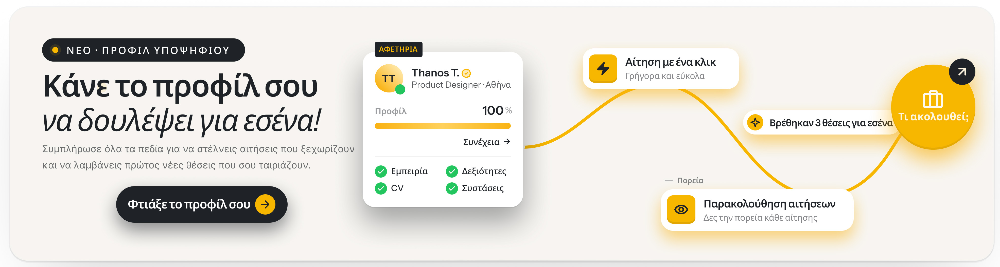
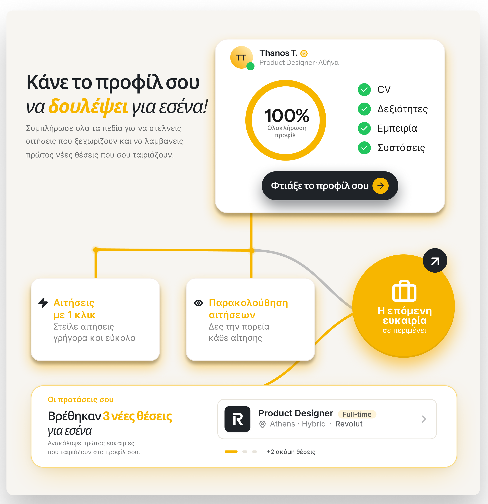

A visual communication audit and proposed brand system for xe.gr — exploring how the platform could be recognised even without its logo present.
01 — Introduction & Audit
xe.gr has already solved something many marketplaces struggle with: communication that's understood. Users generally know what they're looking at and what to do next.
The real question wasn't whether the communication works. It was whether xe.gr could be recognised even when the logo is absent.
Today, recognition relies mainly on the mark. The bigger opportunity is building a distinct visual system that stands on its own, independent of it.
What's Working
Communication is organised consistently around headlines, content and calls to action. Users quickly understand where they are and what they can do next.
This lowers cognitive effort and reinforces usability.
Newsletters and content don't function only as click-acquisition tools. They often offer useful information, advice and guidance before requesting any action from the user.
This reinforces the brand's credibility.
Consistent use of the yellow colour, the CTAs, and the content structure creates the first elements of a recognisable identity.
The next step is evolving them into a complete visual language.
What Doesn't Serve the Goal
Mentally removing the logo from several posts and newsletter sections, most of the communication could belong to any real-estate or job marketplace. There's no visual element that says "this is xe.gr" on its own.
Strong brands are recognised by their visual vocabulary — before the logo even appears.
On Instagram, listings, advice, pop-culture references, comedic videos and memes coexist. The variety of topics is positive — the issue is that the tone shifts too, making it harder for users to form a stable picture of the brand's character.
Consistency builds memory. Memory builds preference.
Communication focuses mainly on listings and content. Platform features — filters, job-seeker profile, saved searches, alerts — appear rarely. Users understand what exists on the platform. They don't always understand what makes the experience different.
A modern marketplace differentiates itself through its tools — not only the volume of its content.
02 — The Challenge & Proposal
Not a redesign. Extending recognition beyond the logo through a coherent visual language, able to carry the brand's identity even without the mark present.
A proprietary visual language inspired by the logic of search, direction and connection. Routes, nodes, points of interest and transitions function as structural components of the identity — recognisable even when the logo is absent.
Shifting part of the content from listings toward product moments: sending an application with one click, how a search alert works, the interface in real use. This builds brand memory around functionality — not only content.
An experienced friend who knows the market better than anyone, without trying to prove it. Useful, direct, human — not corporate, not salesy. A voice that covers educational content, listings and even humour, without shifting tone from post to post.
03 — Visual System
A visual language inspired by the logic of search, navigation and connection — structural, not decorative. Elements like routes, nodes and transitions can function as building blocks of the identity, recognisable even when the logo is absent.
04 — Moodboard & Art Direction
Today xe.gr communicates what someone can find. The proposed direction shifts the weight toward what they can achieve.
Photography
Photos that depict the result of the search and the real moments that follow it.
Avoid
Use


Brand Personality
Like an experienced friend who knows the market better than anyone — without showing off.
Headlines
Instrument Sans
Friendly but decisive. Conveys clarity and confidence without becoming strict or corporate.
Body
Inter
Neutral and functional. Lets the content and product lead, without unnecessary visual noise.
Colour Palette
It's the only real equity the brand currently has. Whatever else changes, this stays.
xe.gr Yellow
#FFB301
Charcoal
#22222A
Warm White
#F8F4F1
Grey
#DAD9D7
Yellow is the primary action colour — buttons, CTAs, highlights.
05 — Application · Job Seeker Profile
For the homepage banner, the feature is communicated through the user's own journey rather than a static visual. The banner shows what happens after completing a profile: from a one-click application, to tracking its progress, to the next opportunity.
The routes-and-connections system introduced in the visual system section is applied here as a structural element of the concept — connecting key product moments and organising information in a way that becomes immediately understandable.

06 — Product Concept
Unlike the homepage banner, which shows the full user journey, this results-page placement focuses on where that journey begins: the profile.
The completed profile is treated as the user's core asset within the platform. The composition emphasises professional presentation, ease of application, and connection to new opportunities — through a calmer, more compact narrative. This keeps the message understandable even in a high-information environment like a results page.
Profile completeness, CV, skills, experience, suggestions, applications, application tracking and the next opportunity are connected through routes and nodes, making the journey immediately understandable.

07 — Outcome
A proposed visual system that moves xe.gr from a logo-led identity towards a more recognisable and flexible visual language — demonstrated through a job-seeker profile experience.